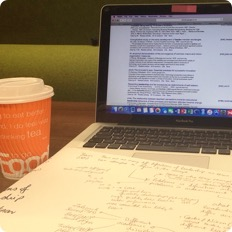

I achieved a First Class BSc Hons Psychology at the University of Glasgow in 2017. Throughout my undergraduate degree, I developed a broad scope of knowledge for psychology as well as detailed understanding in areas of ageing, atypical development, social cognition and positive psychology. In recognition for my efforts not only in Psychology, but across all my additional courses, I received awards and prizes, including bursaries from the School of Modern Languages and Cultures and the School of Physics and Astronomy.
Returning to Glasgow as a postgraduate, the Masters in Research Methods of Psychological Science is challenging me to become a better researcher, allowing me to enhance my fluency with R coding, as well as my knowledge of various research methods, both cognitive and qualitative focused, in addition to brain imaging techniques. Having being interested in mindfulness through both personal experience and my undergraduate course, I am enthusiastic about running my own related Masters project.
2013 – Psychology Merit Award: excellent performance in Psychology course, awarded by the School of Psychology, University of Glasgow
2013 – Tannahill Bequest: first in class for Astronomy course, awarded by the School of Astronomy and Physics, University of Glasgow
2013 – Lanfine Bursary: excellent performance in Advanced German course, awarded by the School of Modern Languages and Cultures, University of Glasgow